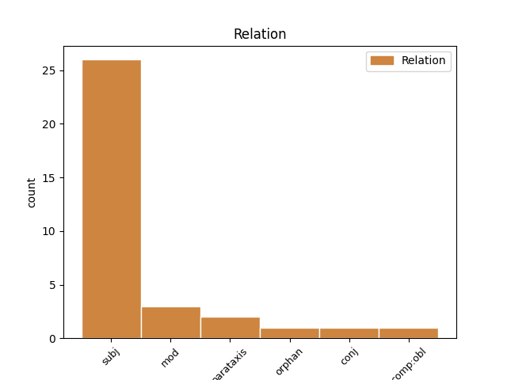
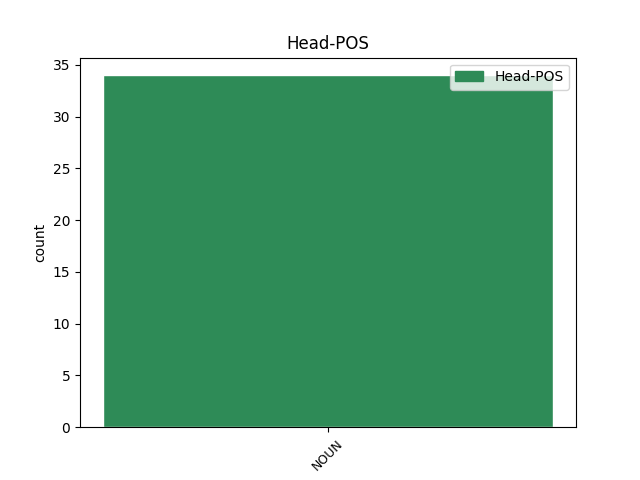
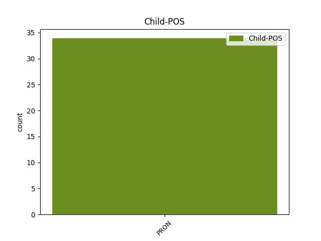

Distribution of features within this leaf



Agreement Rules sorted by frequency.
- When the dependent token is the subject(subj) of the head token, and the head token is NOUN and the dependent token is PRON.
1 Когда _ _ _ _ 0 _ _ _
2 мы _ _ _ _ 0 _ _ _
3 сойдемся _ _ _ _ 0 _ _ _
4 за _ _ _ _ 0 _ _ _
5 круглым _ _ _ _ 0 _ _ _
6 столом _ _ _ _ 0 _ _ _
7 , _ _ _ _ 0 _ _ _
8 Который который PRON PRON Case=Nom|Gender=Masc|Number=Sing 11 subj _ _
9 для _ _ _ _ 0 _ _ _
10 дружества _ _ _ _ 0 _ _ _
11 тесен тесный NOUN NOUN Gender=Masc|Number=Sing|Variant=Short 0 _ _ _
12 , _ _ _ _ 0 _ _ _
13 И _ _ _ _ 0 _ _ _
14 светлую _ _ _ _ 0 _ _ _
15 пену _ _ _ _ 0 _ _ _
16 полнее _ _ _ _ 0 _ _ _
17 нальем _ _ _ _ 0 _ _ _
18 Под _ _ _ _ 0 _ _ _
19 гул _ _ _ _ 0 _ _ _
20 восклицаний _ _ _ _ 0 _ _ _
21 и _ _ _ _ 0 _ _ _
22 песен _ _ _ _ 0 _ _ _
23 , _ _ _ _ 0 _ _ _
24 Когда _ _ _ _ 0 _ _ _
25 мы _ _ _ _ 0 _ _ _
26 над _ _ _ _ 0 _ _ _
27 пиршеством _ _ _ _ 0 _ _ _
28 сдвинем _ _ _ _ 0 _ _ _
29 хрусталь _ _ _ _ 0 _ _ _
30 И _ _ _ _ 0 _ _ _
31 тонкому _ _ _ _ 0 _ _ _
32 звону _ _ _ _ 0 _ _ _
33 бокала _ _ _ _ 0 _ _ _
34 Рокочущим _ _ _ _ 0 _ _ _
35 вздохом _ _ _ _ 0 _ _ _
36 ответит _ _ _ _ 0 _ _ _
37 рояль _ _ _ _ 0 _ _ _
38 , _ _ _ _ 0 _ _ _
39 Что _ _ _ _ 0 _ _ _
40 время _ _ _ _ 0 _ _ _
41 разлук _ _ _ _ 0 _ _ _
42 миновало _ _ _ _ 0 _ _ _
43 , _ _ _ _ 0 _ _ _
44 -- _ _ _ _ 0 _ _ _
45 В _ _ _ _ 0 _ _ _
46 сиянии _ _ _ _ 0 _ _ _
47 елки _ _ _ _ 0 _ _ _
48 , _ _ _ _ 0 _ _ _
49 сверканье _ _ _ _ 0 _ _ _
50 огней _ _ _ _ 0 _ _ _
51 И _ _ _ _ 0 _ _ _
52 блестках _ _ _ _ 0 _ _ _
53 вина _ _ _ _ 0 _ _ _
54 золотого _ _ _ _ 0 _ _ _
55 Я _ _ _ _ 0 _ _ _
56 встану _ _ _ _ 0 _ _ _
57 и _ _ _ _ 0 _ _ _
58 вновь _ _ _ _ 0 _ _ _
59 попрошу _ _ _ _ 0 _ _ _
60 у _ _ _ _ 0 _ _ _
61 друзей _ _ _ _ 0 _ _ _
62 Простого _ _ _ _ 0 _ _ _
63 заздравного _ _ _ _ 0 _ _ _
64 слова _ _ _ _ 0 _ _ _
65 . _ _ _ _ 0 _ _ _
1 У _ _ _ _ 0 _ _ _
2 меня _ _ _ _ 0 _ _ _
3 был _ _ _ _ 0 _ _ _
4 уютный _ _ _ _ 0 _ _ _
5 завтрак _ _ _ _ 0 _ _ _
6 в _ _ _ _ 0 _ _ _
7 кафе _ _ _ _ 0 _ _ _
8 , _ _ _ _ 0 _ _ _
9 название название NOUN _ Animacy=Inan|Case=Nom|Gender=Neut|Number=Sing 0 _ _ _
10 которого который PRON _ Case=Gen|Gender=Neut|Number=Sing 9 mod _ _
11 соответствует _ _ _ _ 0 _ _ _
12 году _ _ _ _ 0 _ _ _
13 создания _ _ _ _ 0 _ _ _
14 Харькова _ _ _ _ 0 _ _ _
15 . _ _ _ _ 0 _ _ _
Disagree Examples:
1 Но _ _ _ _ 0 _ _ _
2 ты _ _ _ _ 0 _ _ _
3 не _ _ _ _ 0 _ _ _
4 живешь _ _ _ _ 0 _ _ _
5 по-евангельски _ _ _ _ 0 _ _ _
6 , _ _ _ _ 0 _ _ _
7 и _ _ _ _ 0 _ _ _
8 это это PRON _ Animacy=Inan|Case=Nom|Gender=Neut|Number=Sing 10 subj _ _
9 — _ _ _ _ 0 _ _ _
10 причина причина NOUN _ Animacy=Inan|Case=Nom|Gender=Fem|Number=Sing 0 _ _ _
11 твоих _ _ _ _ 0 _ _ _
12 проблем _ _ _ _ 0 _ _ _
13 . _ _ _ _ 0 _ _ _
1 * _ _ _ _ 0 _ _ _
2 * _ _ _ _ 0 _ _ _
3 * _ _ _ _ 0 _ _ _
4 И _ _ _ _ 0 _ _ _
5 дальше _ _ _ _ 0 _ _ _
6 — _ _ _ _ 0 _ _ _
7 по _ _ _ _ 0 _ _ _
8 течению _ _ _ _ 0 _ _ _
9 реки _ _ _ _ 0 _ _ _
10 , _ _ _ _ 0 _ _ _
11 где _ _ _ _ 0 _ _ _
12 под _ _ _ _ 0 _ _ _
13 водой _ _ _ _ 0 _ _ _
14 — _ _ _ _ 0 _ _ _
15 кремлёвских _ _ _ _ 0 _ _ _
16 башен _ _ _ _ 0 _ _ _
17 главы _ _ _ _ 0 _ _ _
18 , _ _ _ _ 0 _ _ _
19 монастыри _ _ _ _ 0 _ _ _
20 , _ _ _ _ 0 _ _ _
21 обрывы _ _ _ _ 0 _ _ _
22 и _ _ _ _ 0 _ _ _
23 дубравы _ _ _ _ 0 _ _ _
24 , _ _ _ _ 0 _ _ _
25 а _ _ _ _ 0 _ _ _
26 меж _ _ _ _ 0 _ _ _
27 ветвей _ _ _ _ 0 _ _ _
28 — _ _ _ _ 0 _ _ _
29 прозрачные _ _ _ _ 0 _ _ _
30 мальки _ _ _ _ 0 _ _ _
31 , _ _ _ _ 0 _ _ _
32 дворы _ _ _ _ 0 _ _ _
33 и _ _ _ _ 0 _ _ _
34 крыши _ _ _ _ 0 _ _ _
35 , _ _ _ _ 0 _ _ _
36 нивы _ _ _ _ 0 _ _ _
37 и _ _ _ _ 0 _ _ _
38 луга _ _ _ _ 0 _ _ _
39 , _ _ _ _ 0 _ _ _
40 по _ _ _ _ 0 _ _ _
41 площадям _ _ _ _ 0 _ _ _
42 повозок _ _ _ _ 0 _ _ _
43 вереницы _ _ _ _ 0 _ _ _
44 , _ _ _ _ 0 _ _ _
45 гнилые _ _ _ _ 0 _ _ _
46 лодки _ _ _ _ 0 _ _ _
47 , _ _ _ _ 0 _ _ _
48 злые _ _ _ _ 0 _ _ _
49 водяницы _ _ _ _ 0 _ _ _
50 , _ _ _ _ 0 _ _ _
51 а _ _ _ _ 0 _ _ _
52 в _ _ _ _ 0 _ _ _
53 волосах _ _ _ _ 0 _ _ _
54 — _ _ _ _ 0 _ _ _
55 песок _ _ _ _ 0 _ _ _
56 и _ _ _ _ 0 _ _ _
57 жемчуга _ _ _ _ 0 _ _ _
58 , _ _ _ _ 0 _ _ _
59 где _ _ _ _ 0 _ _ _
60 над _ _ _ _ 0 _ _ _
61 водой _ _ _ _ 0 _ _ _
62 — _ _ _ _ 0 _ _ _
63 пыльцой _ _ _ _ 0 _ _ _
64 небесной _ _ _ _ 0 _ _ _
65 ржи _ _ _ _ 0 _ _ _
66 витает _ _ _ _ 0 _ _ _
67 свет _ _ _ _ 0 _ _ _
68 , _ _ _ _ 0 _ _ _
69 трепещут _ _ _ _ 0 _ _ _
70 птичьи _ _ _ _ 0 _ _ _
71 клики _ _ _ _ 0 _ _ _
72 , _ _ _ _ 0 _ _ _
73 и _ _ _ _ 0 _ _ _
74 в _ _ _ _ 0 _ _ _
75 облаках _ _ _ _ 0 _ _ _
76 — _ _ _ _ 0 _ _ _
77 божественные _ _ _ _ 0 _ _ _
78 лики _ _ _ _ 0 _ _ _
79 , _ _ _ _ 0 _ _ _
80 а _ _ _ _ 0 _ _ _
81 в _ _ _ _ 0 _ _ _
82 бородах _ _ _ _ 0 _ _ _
83 — _ _ _ _ 0 _ _ _
84 стрекозы _ _ _ _ 0 _ _ _
85 и _ _ _ _ 0 _ _ _
86 стрижи _ _ _ _ 0 _ _ _
87 , _ _ _ _ 0 _ _ _
88 Орел _ _ _ _ 0 _ _ _
89 и _ _ _ _ 0 _ _ _
90 Лев _ _ _ _ 0 _ _ _
91 , _ _ _ _ 0 _ _ _
92 и _ _ _ _ 0 _ _ _
93 судьбы _ _ _ _ 0 _ _ _
94 на _ _ _ _ 0 _ _ _
95 Весах _ _ _ _ 0 _ _ _
96 , _ _ _ _ 0 _ _ _
97 огни _ _ _ _ 0 _ _ _
98 знамений _ _ _ _ 0 _ _ _
99 , _ _ _ _ 0 _ _ _
100 мрачные _ _ _ _ 0 _ _ _
101 зарницы _ _ _ _ 0 _ _ _
102 , _ _ _ _ 0 _ _ _
103 парад _ _ _ _ 0 _ _ _
104 планет _ _ _ _ 0 _ _ _
105 , _ _ _ _ 0 _ _ _
106 стальные _ _ _ _ 0 _ _ _
107 колесницы _ _ _ _ 0 _ _ _
108 , _ _ _ _ 0 _ _ _
109 летучий _ _ _ _ 0 _ _ _
110 бриг _ _ _ _ 0 _ _ _
111 с _ _ _ _ 0 _ _ _
112 кометой _ _ _ _ 0 _ _ _
113 в _ _ _ _ 0 _ _ _
114 парусах _ _ _ _ 0 _ _ _
115 , _ _ _ _ 0 _ _ _
116 где _ _ _ _ 0 _ _ _
117 вдоль _ _ _ _ 0 _ _ _
118 воды _ _ _ _ 0 _ _ _
119 — _ _ _ _ 0 _ _ _
120 чужие _ _ _ _ 0 _ _ _
121 маяки _ _ _ _ 0 _ _ _
122 , _ _ _ _ 0 _ _ _
123 родные _ _ _ _ 0 _ _ _
124 кладбища _ _ _ _ 0 _ _ _
125 и _ _ _ _ 0 _ _ _
126 пепелища _ _ _ _ 0 _ _ _
127 , _ _ _ _ 0 _ _ _
128 и _ _ _ _ 0 _ _ _
129 чернь _ _ _ _ 0 _ _ _
130 подла _ _ _ _ 0 _ _ _
131 , _ _ _ _ 0 _ _ _
132 и _ _ _ _ 0 _ _ _
133 знать _ _ _ _ 0 _ _ _
134 темна _ _ _ _ 0 _ _ _
135 и _ _ _ _ 0 _ _ _
136 нища _ _ _ _ 0 _ _ _
137 , _ _ _ _ 0 _ _ _
138 и _ _ _ _ 0 _ _ _
139 под _ _ _ _ 0 _ _ _
140 стенами _ _ _ _ 0 _ _ _
141 храмов _ _ _ _ 0 _ _ _
142 — _ _ _ _ 0 _ _ _
143 кабаки _ _ _ _ 0 _ _ _
144 , _ _ _ _ 0 _ _ _
145 все _ _ _ _ 0 _ _ _
146 пустыни _ _ _ _ 0 _ _ _
147 — _ _ _ _ 0 _ _ _
148 пустыни _ _ _ _ 0 _ _ _
149 , _ _ _ _ 0 _ _ _
150 всё всё PRON _ Animacy=Inan|Case=Nom|Gender=Neut|Number=Sing 152 subj _ _
151 — _ _ _ _ 0 _ _ _
152 леса лес NOUN _ Animacy=Inan|Case=Nom|Gender=Masc|Number=Plur 0 _ _ _
153 , _ _ _ _ 0 _ _ _
154 всё _ _ _ _ 0 _ _ _
155 окна _ _ _ _ 0 _ _ _
156 Вавилона _ _ _ _ 0 _ _ _
157 и _ _ _ _ 0 _ _ _
158 Содома _ _ _ _ 0 _ _ _
159 , _ _ _ _ 0 _ _ _
160 и _ _ _ _ 0 _ _ _
161 больше _ _ _ _ 0 _ _ _
162 ни _ _ _ _ 0 _ _ _
163 детсада _ _ _ _ 0 _ _ _
164 , _ _ _ _ 0 _ _ _
165 ни _ _ _ _ 0 _ _ _
166 роддома _ _ _ _ 0 _ _ _
167 , _ _ _ _ 0 _ _ _
168 ни _ _ _ _ 0 _ _ _
169 даже _ _ _ _ 0 _ _ _
170 глаз _ _ _ _ 0 _ _ _
171 потерянного _ _ _ _ 0 _ _ _
172 пса _ _ _ _ 0 _ _ _
173 , _ _ _ _ 0 _ _ _
174 где _ _ _ _ 0 _ _ _
175 на _ _ _ _ 0 _ _ _
176 плоту _ _ _ _ 0 _ _ _
177 — _ _ _ _ 0 _ _ _
178 гниет _ _ _ _ 0 _ _ _
179 последний _ _ _ _ 0 _ _ _
180 брат _ _ _ _ 0 _ _ _
181 — _ _ _ _ 0 _ _ _
182 на _ _ _ _ 0 _ _ _
183 сотни _ _ _ _ 0 _ _ _
184 раз _ _ _ _ 0 _ _ _
185 промоченный _ _ _ _ 0 _ _ _
186 слезами _ _ _ _ 0 _ _ _
187 , _ _ _ _ 0 _ _ _
188 расшитый _ _ _ _ 0 _ _ _
189 розами _ _ _ _ 0 _ _ _
190 и _ _ _ _ 0 _ _ _
191 образами _ _ _ _ 0 _ _ _
192 , _ _ _ _ 0 _ _ _
193 и _ _ _ _ 0 _ _ _
194 образами _ _ _ _ 0 _ _ _
195 милых _ _ _ _ 0 _ _ _
196 чёрный _ _ _ _ 0 _ _ _
197 плат _ _ _ _ 0 _ _ _
198 , _ _ _ _ 0 _ _ _
199 где _ _ _ _ 0 _ _ _
200 , _ _ _ _ 0 _ _ _
201 заточён _ _ _ _ 0 _ _ _
202 неведомо _ _ _ _ 0 _ _ _
203 за _ _ _ _ 0 _ _ _
204 что _ _ _ _ 0 _ _ _
205 , _ _ _ _ 0 _ _ _
206 ты _ _ _ _ 0 _ _ _
207 сам _ _ _ _ 0 _ _ _
208 себе _ _ _ _ 0 _ _ _
209 — _ _ _ _ 0 _ _ _
210 всевидящее _ _ _ _ 0 _ _ _
211 око _ _ _ _ 0 _ _ _
212 , _ _ _ _ 0 _ _ _
213 и _ _ _ _ 0 _ _ _
214 бесконечно _ _ _ _ 0 _ _ _
215 долго _ _ _ _ 0 _ _ _
216 — _ _ _ _ 0 _ _ _
217 до _ _ _ _ 0 _ _ _
218 истока _ _ _ _ 0 _ _ _
219 , _ _ _ _ 0 _ _ _
220 и _ _ _ _ 0 _ _ _
221 безнадежно _ _ _ _ 0 _ _ _
222 мало _ _ _ _ 0 _ _ _
223 — _ _ _ _ 0 _ _ _
224 до _ _ _ _ 0 _ _ _
225 Ничто _ _ _ _ 0 _ _ _
226 . _ _ _ _ 0 _ _ _
1 Администрация администрация NOUN _ Animacy=Inan|Case=Nom|Gender=Fem|Number=Sing 0 _ _ _
2 Президента _ _ _ _ 0 _ _ _
3 : _ _ _ _ 0 _ _ _
4 " _ _ _ _ 0 _ _ _
5 Ой _ _ _ _ 0 _ _ _
6 , _ _ _ _ 0 _ _ _
7 всё всё PRON _ Animacy=Inan|Case=Nom|Gender=Neut|Number=Sing 1 parataxis _ SpaceAfter=No
8 ! _ _ _ _ 0 _ _ _
9 " _ _ _ _ 0 _ _ _
1 Это это PRON _ Animacy=Inan|Case=Nom|Gender=Neut|Number=Sing 3 subj _ _
2 ложная _ _ _ _ 0 _ _ _
3 религия религия NOUN _ Animacy=Inan|Case=Nom|Gender=Fem|Number=Sing 0 _ _ _
4 . _ _ _ _ 0 _ _ _
1 Это это PRON _ Animacy=Inan|Case=Nom|Gender=Neut|Number=Sing 2 subj _ _
2 лось лось NOUN _ Animacy=Anim|Case=Nom|Gender=Masc|Number=Sing 0 _ _ _
3 5 _ _ _ _ 0 _ _ _
4 летний _ _ _ _ 0 _ _ _
5 ! _ _ _ _ 0 _ _ _